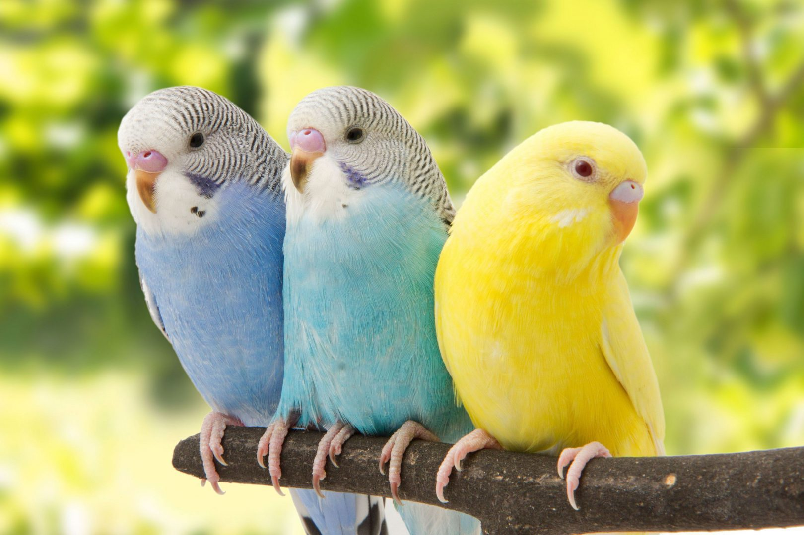

O que são?
As aves são animais vertebrados, de sangue quente (homeotérmicos), que possuem o corpo revestido de penas. Com cerca de 9000 espécies conhecidas, elas ocupam vários tipos de ambientes e, de maneira geral, dominam o ar.

Características:
- São vertebrados amniotas, alantoidianos e homeotérmicos;
- Os maxilares foram transformados em bicos e atualmente são desprovidos de dentes;
- Olhos bem desenvolvidos, com percepção de cores e em alguns casos é composto por duas fovea centralis, o que lhes confere maior campo de visão. Além das pálpebras, há a membrana nictiante que corre cobrindo o olho no sentido horizontal;